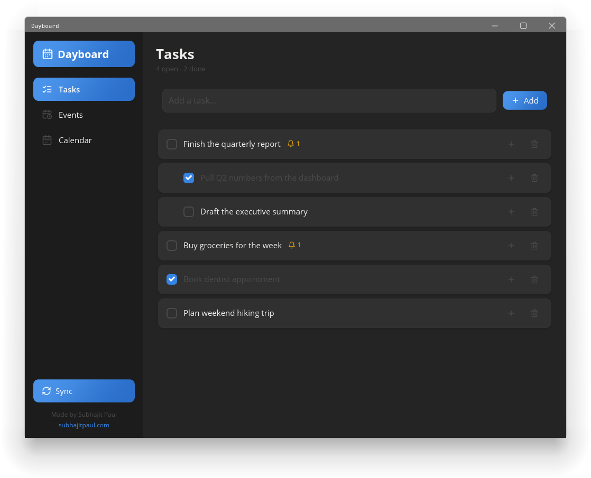
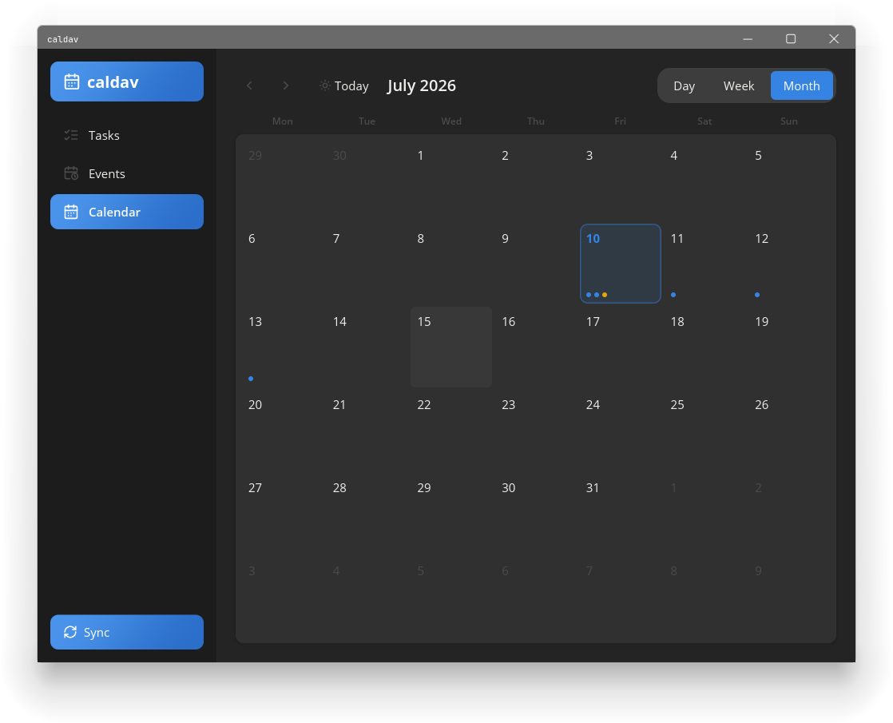
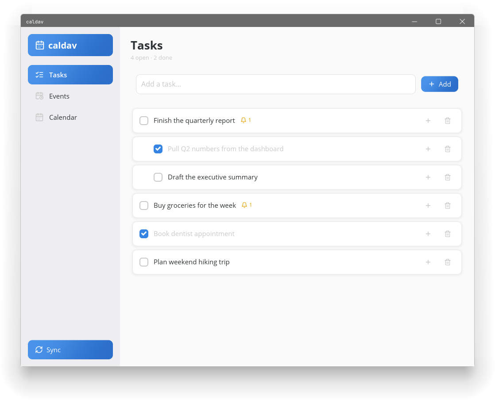
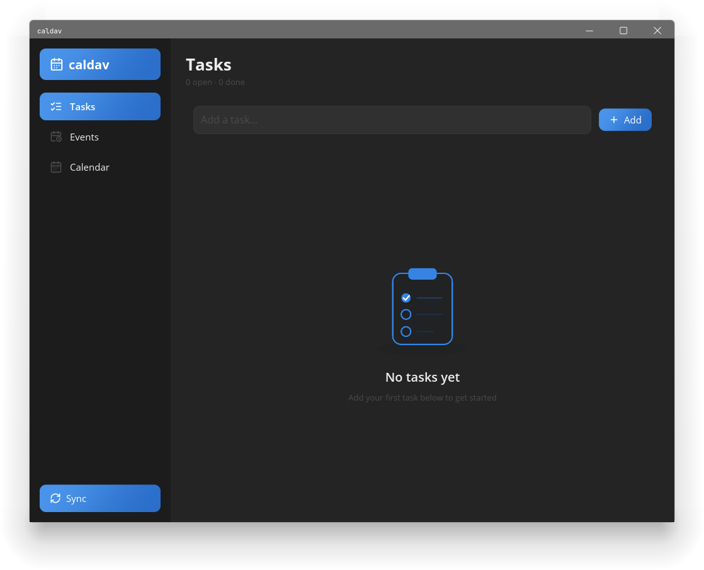
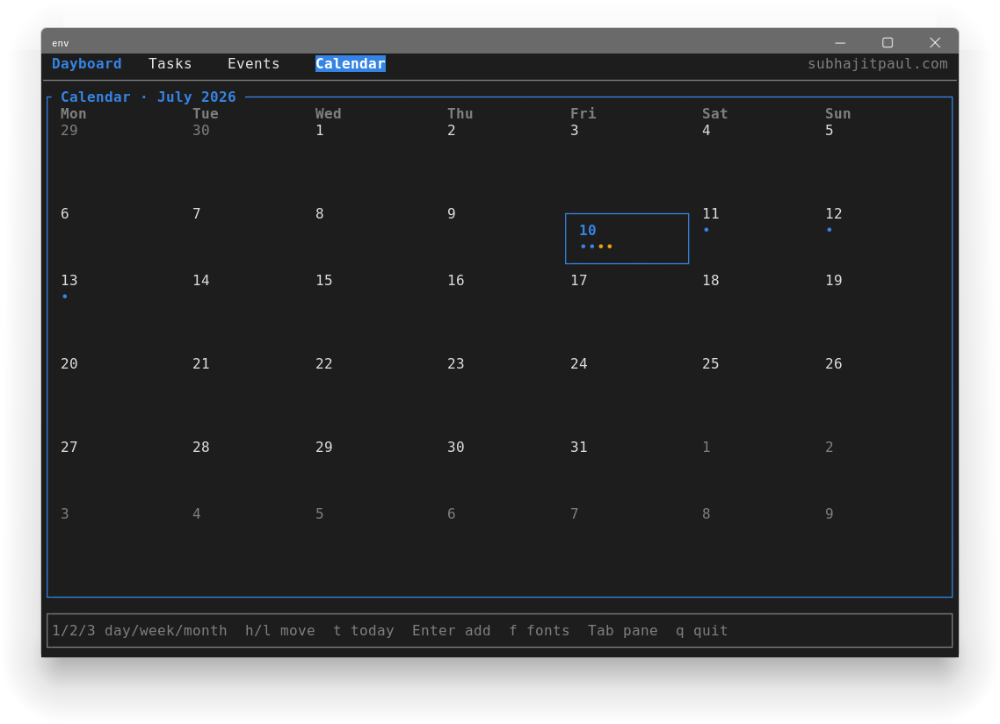
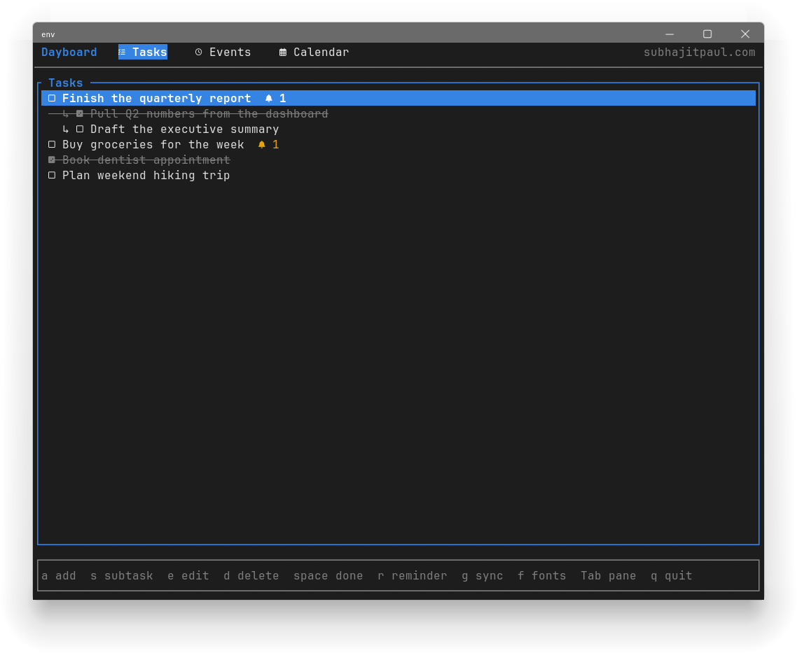

Everything, one board. A native Linux calendar, tasks, and reminders app — local-first in SQLite, with optional two-way sync to Google Calendar and Google Tasks. Ships two frontends over one shared core: a rich GUI (built with iced) and a fast TUI (built with ratatui).






curl -fsSL https://subhajit-paul.github.io/dayboard/dayboard-archive-keyring.gpg \
| sudo tee /usr/share/keyrings/dayboard-archive-keyring.gpg > /dev/null
echo "deb [arch=amd64 signed-by=/usr/share/keyrings/dayboard-archive-keyring.gpg] https://subhajit-paul.github.io/dayboard stable main" \
| sudo tee /etc/apt/sources.list.d/dayboard.list
sudo apt update
sudo apt install dayboard-gui # or dayboard-tui; both pull in dayboard-daemonEach of the three is a separate package. dayboard-gui
and dayboard-tui each depend on
dayboard-daemon (for background reminders and sync), so
installing either pulls it in automatically;
dayboard-daemon can also be installed on its own for a
headless setup. The repo is signed and updated automatically on every
release.
Requires Rust 1.85+ (2024 edition). The GUI
additionally needs the usual Linux windowing libraries at runtime
(Wayland or X11, libxkbcommon).
git clone https://github.com/Subhajit-Paul/dayboard.git
cd dayboard
cargo build --workspace --releaseBinaries land in target/release/ as gui,
tui, and daemon.
cargo run -p gui # the graphical app
cargo run -p tui # the terminal appcargo run -p daemon -- --install # write & enable a systemd --user unit (caldavd)
cargo run -p daemon -- --auth # run the interactive Google OAuth flow--install registers a systemd --user
service that polls for due reminders and (once connected) periodically
syncs. Check it with systemctl --user status caldavd.
$XDG_CONFIG_HOME/caldav/google_client.json
(usually ~/.config/caldav/google_client.json).cargo run -p daemon -- --auth and complete the
browser flow. Tokens are cached (mode 0600) as
tokens.json alongside the client file.| Variable | Default | What it does |
|---|---|---|
CALDAV_POLL_SECS |
30 |
How often the daemon checks for due reminders. |
CALDAV_SYNC_SECS |
300 |
How often the daemon syncs with Google (once connected). |
CALDAV_TUI_NERD |
unset | Set to 1 to default the TUI's Nerd Font glyphs on. |
Data lives at
$XDG_DATA_HOME/caldav/caldav.db (usually
~/.local/share/caldav/caldav.db).
a add · s subtask · e edit ·
d delete · space toggle done · r
reminder · v add event · g sync ·
f toggle Nerd Font glyphs · Tab switch pane ·
1/2/3 Day/Week/Month ·
h/l move cursor · t today ·
q quit.
A Cargo workspace with four members; core holds all the
real logic and is the only crate with tests.
| Crate | Package | Role |
|---|---|---|
core |
caldav_core |
Db (SQLite), models, Google OAuth + two-way sync. |
daemon |
daemon |
Reminder notifications + periodic sync; installs a systemd unit. |
tui |
tui |
ratatui terminal frontend. |
gui |
gui |
iced graphical frontend. |
The crate/package names, the on-disk database path, and the
caldavdCLI keep the originalcaldavname; Dayboard is the product/display name.
cargo test --workspace # core has the main suite; gui has date-math tests
cargo clippy --all-targets # kept warning-free
cargo fmtPushing a v* tag (e.g.
git tag v0.1.0 && git push origin v0.1.0) triggers
the release workflow: it builds the workspace in release mode and, on
success, publishes the Linux binaries as a GitHub Release archive. See
.github/workflows.
Built by Subhajit Paul — subhajitpaul.com.